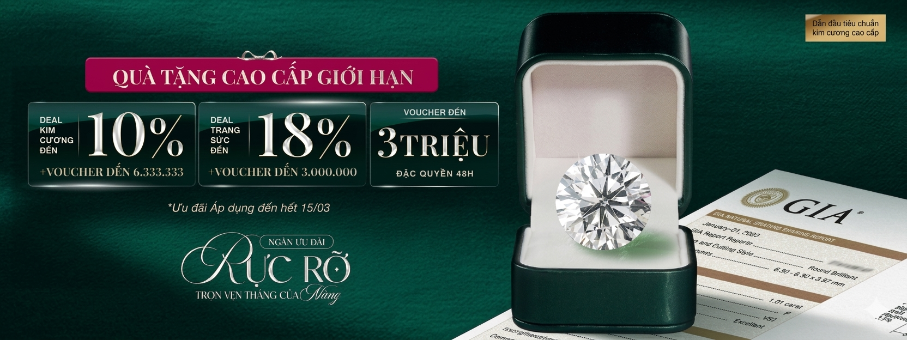

Mỗi viên kim cương tại Jade Chamber đều trải qua quy trình tuyển chọn khắt khe theo tiêu chuẩn 4C’s:
Đặc biệt, Jade Chamber loại bỏ hoàn toàn kim cương có lỗi ảnh hưởng đến độ bền và kết cấu như Indented Natural, Chip, Cavity, Twinning Wisp, Bearding. Vì vậy, mỗi viên kim cương tại Jade Chamber đều đạt chất lượng cao về thẩm mỹ, giá trị, đảm bảo tài sản bền vững cho khách hàng.
Kim cương thiên nhiên GIA là kim cương được hình thành hoàn toàn trong tự nhiên, trải qua hàng tỷ năm dưới áp suất và nhiệt độ cực cao trong lòng đất. Sau khi khai thác, những viên kim cương này được Viện Ngọc học Hoa Kỳ (GIA) - Tổ chức giám định uy tín nhất thế giới kiểm định và cấp chứng thư xác nhận.
Chứng nhận GIA ghi rõ thông tin chi tiết về 4Cs (Carat, Color, Clarity, Cut) của từng viên kim cương, đảm bảo tính xác thực, minh bạch và giá trị quốc tế.
Tiêu chuẩn 4Cs của GIA (Gemological Institute of America) là hệ thống đánh giá chất lượng kim cương toàn cầu, gồm Carat (Trọng lượng), Cut (Giác cắt), Color (Màu sắc) và Clarity (Độ tinh khiết).
Bốn yếu tố trong 4Cs giúp xác định, so sánh và định giá kim cương một cách khách quan, minh bạch và chính xác, phản ánh độ hiếm, giá trị và vẻ đẹp tự nhiên của từng viên. Tiêu chuẩn 4Cs cũng là nền tảng trong chứng nhận GIA, đảm bảo kim cương có nguồn gốc rõ ràng và chất lượng được kiểm định khoa học.
Mặc dù có cùng kích thước, giá kim cương vẫn có thể khác nhau do còn phụ thuộc vào ba yếu tố còn lại trong tiêu chuẩn 4Cs của GIA: Giác cắt (Cut), Màu sắc (Color) và Độ tinh khiết (Clarity), cùng với một số yếu tố khác như độ huỳnh quang và chứng nhận GIA,...
Một viên kim cương có giác cắt xuất sắc, màu trắng hơn và ít tì vết hơn sẽ hiếm gặp, phản xạ ánh sáng rực rỡ hơn, vì vậy có giá trị cao hơn dù có cùng kích thước với viên khác.
Tại Jade Chamber, đội ngũ chuyên viên tư vấn được đào tạo và cấp chứng chỉ trực tiếp từ GIA sẽ hỗ trợ bạn lựa chọn viên kim cương đẹp, đúng giá trị và phù hợp ngân sách. Dựa trên tiêu chuẩn 4Cs, Jade giúp bạn hiểu rõ yếu tố ảnh hưởng đến giá trị kim cương và tối ưu ngân sách để sở hữu viên kim cương sáng đẹp, chất lượng cao nhất trong tầm giá mong muốn.
Đội ngũ Jade đảm bảo rằng viên kim cương bạn sở hữu có tiêu chuẩn quốc tế cao, đảm bảo độ bền và giá trị toàn cầu.
Chính sách thu mua - thu đổi kim cương tại Jade Chamber lên đến 100% giá trị, giúp khách hàng dễ dàng nâng cấp hoặc đổi sang viên kim cương mới mà không lo mất giá.
Chính sách luôn minh bạch, công khai trên Website, đảm bảo quyền lợi tối đa cho khách hàng.